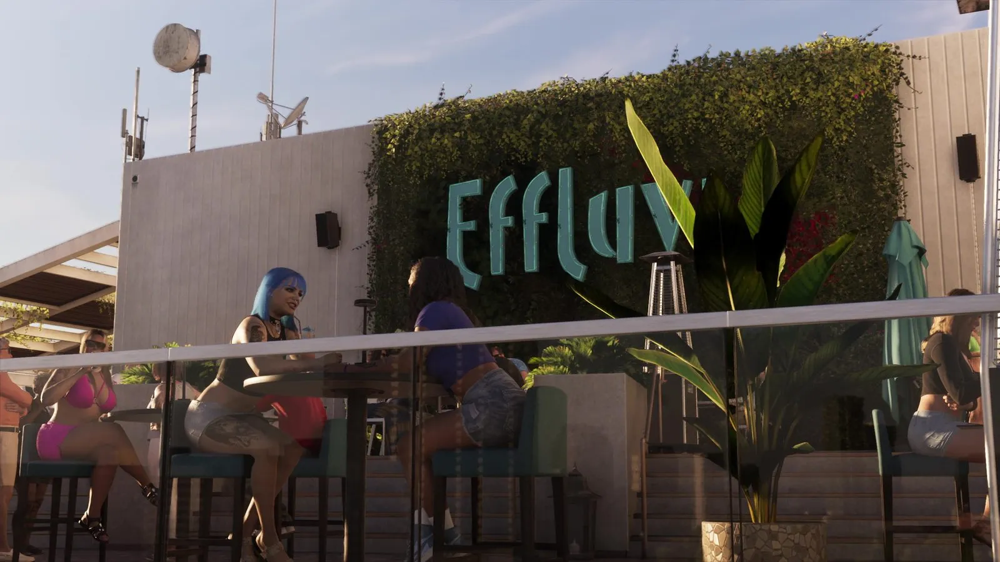
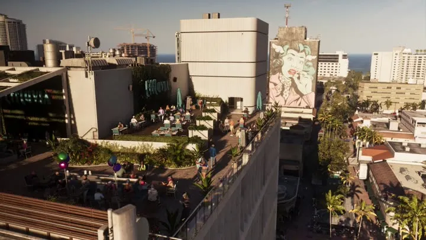
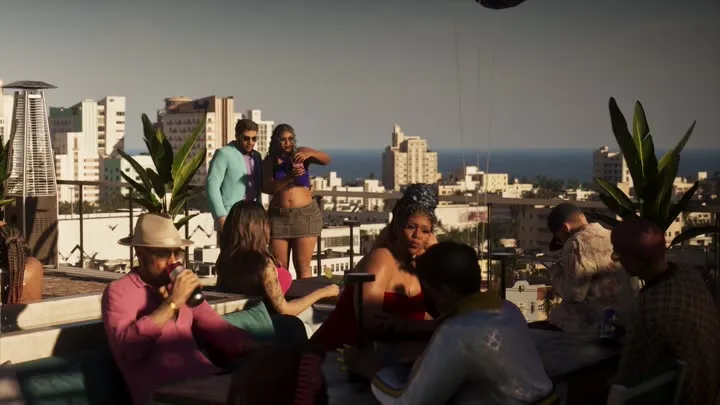

Бар Effluvia на крыше в GTA 6
Обновлено:

Бар на крыше с видом на Вайс-Сити — место свидания героев в «Расширенном показе».
- Терраса на крыше, вид на город и море.
- Гости за столиками.
Подробно
С 09:30 по 11:30 «Расширенного показа» идёт эпизод в баре на крыше: терраса над городом, зелень, гости за столиками, вид на море. Бар называется Effluvia.
Прототип конкретного руфтопа Rockstar не называла — в Майами таких баров много, поэтому отдельного сравнения мы не делаем.
Кадры


Где посмотреть
Таймкоды — чтобы найти момент в официальном видео Rockstar.
| Где | Что в кадре |
|---|---|
| «Расширенный показ», 10:40 | Бар на крыше |
| «Расширенный показ», 09:31 | Терраса на крыше над городом |
| «Расширенный показ», 09:33 | Гости на крыше |
На этой странице также: Бар на крыше (Занятия).
Кадры и названия: Rockstar Games — трейлеры GTA VI, «Расширенный показ» (An Extended Look), официальные скриншоты. После релиза 19 ноября 2026 года дополним страницу данными из игры.
Каждый день — одно сравнение: кадр игры рядом с реальным фото. Подписывайтесь:
YouTubeInstagramTikTok